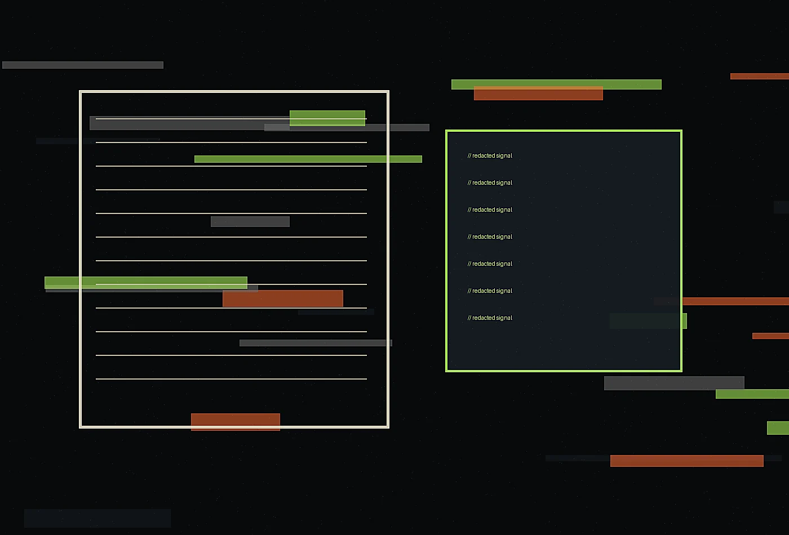

We prefer precise improvements that can be maintained over sweeping gestures that age into clutter.
classified clarity / readable risk / board signal
Noir editorial cyber-intelligence bureau
About at Cipher Quill
Cipher Quill Review was formed for leaders who believe atmosphere and operations should inform one another. Our about page explains the thinking, standards, and working habits behind security intelligence written for directors, operators, and skeptical readers.
Request a briefing
Origin with a point of view
Cipher Quill Review exists because polished projects often fail at the exact moment people have to use them. We built a practice around close observation, strong writing, material awareness, and operating details. The studio is intentionally small, so senior attention stays inside the work from first conversation to final handoff. We measure success by whether teams feel clearer, guests feel considered, and the system still works after the launch photographs are forgotten.
Principles we keep visible
Visual direction, service scripts, and daily workflows are designed as one connected experience.
We listen to staff, place, weather, constraints, budgets, and users before prescribing a form.

How a project moves
Discovery is compact and immersive. Strategy is written clearly. Prototypes appear early. Feedback is sorted by usefulness, not volume. The final package includes the visible design language and the backstage instructions needed to keep it alive. Clients never receive an ornamental deck without a path to action.
Senior team, light footprint
Our collaborators include designers, writers, operations specialists, researchers, and production-minded advisors. Every team is assembled for the assignment, which keeps the process personal and the recommendations honest. We do not overstaff, oversell, or hide junior guesswork behind presentation polish.
- Research direction
- Experience strategy
- Editorial systems
- Operational prototyping
What clients remember
Clients often tell us the work made their decisions quieter. That is the compliment we value most. Quiet decisions are not timid; they are informed, legible, and easier to explain. Whether the project is physical, culinary, hospitality-led, or intelligence-driven, our standard is the same: make the important things easier to notice and easier to maintain.
We work with the documents and meetings that already shape security decisions: board packets, incident rooms, tabletop summaries, advisory drafts, internal explainers, and executive notes. Rather than adding another noisy channel, we improve the language, sequence, and evidence standards of the channels leaders already read.
Our editorial lens is useful before, during, and after pressure events. Beforehand, we define formats and vocabulary. During response, we keep updates factual and proportionate. Afterward, we help teams preserve the record, explain lessons, and improve governance without turning every retrospective into blame or brand management.